Este santuario se encuentra en la región de la torre de Farone, aunque para encontrarlo primero debes superar la prueba heroica "Los fragmentos perdidos". El santuario se encuentra al este de la aldea Onaona, en una zona denominada ruinas de Arecal.
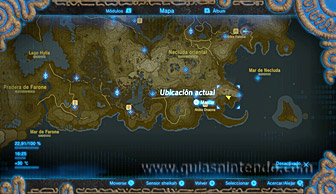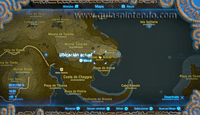
Al llegar allí encontrarás a un personaje llamado Nikao con el que tendrás que hablar para activar la prueba heroica "Los fragmentos perdidos", la cual consiste encontrar tres fragmentos de un monumento y hacerles una foto con el módulo Cámara de fotos.
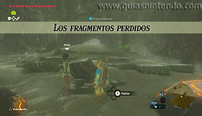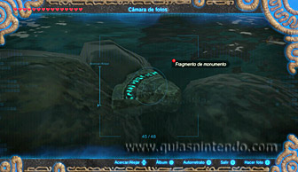
Para encontrar dichos fragmentos es mejor que sea de noche, ya que brillan y es más fácil localizarlos. Podrás encontrar uno de ellos siguiendo la pared que va hacia el este desde donde está Nikao.
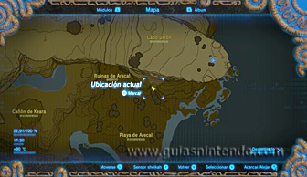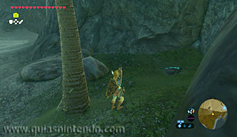
Hay otro fragmento en la playa que hay al sudoeste de donde está Nikao, bajo el agua, cerca de unas cajas y unos barriles.
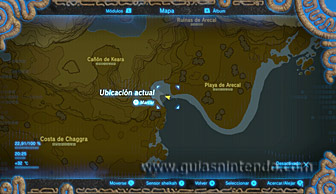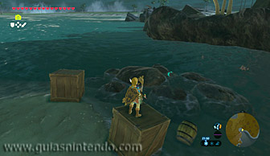
Otro fragmento se encuentra en el extremo final del Cabo Remoto que hay al sudeste de donde se encuentra Nikao, junto a una palmera.
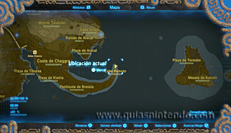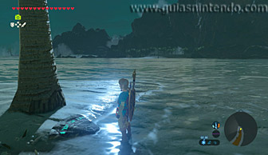
Cuando logres fotografiar a los tres fragmentos deberás volver hablar con Nikao para enseñárselos, y luego tendrás que agacharte sobre uno de los dos pedestales que hay allí para que Nikao haga lo mismo en el otro. De esa manera, completarás la prueba heroica y harás aparecer el santuario.
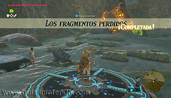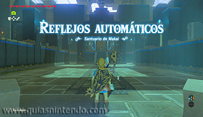
Una vez dentro del santuario deberás subir por una rampa que queda a mano izquierda para coger uno de los cuatro barriles de madera que vas a encontrar, y luego tendrás que subir con él en brazos en una plataforma móvil que llega hasta ahí. Cuando la plataforma se mueva y supere el primer enrejado que hay a los lados del recorrido deja el barril sobre la parte derecha de la plataforma, agáchate para pasar por debajo de un segundo enrejado y ponte a la derecha de la plataforma para superar un tercer enrejado. Así, podrás llegar hasta el final del recorrido y podrás usar el barril para ponerlo sobre un interruptor.
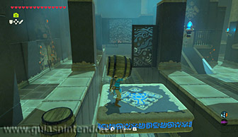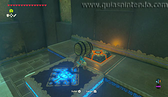
Al poner el barril sobre el interruptor harás desaparecer unos barrotes que llevan a un cofre que contiene una llave pequeña, la cual tendrás que usar para abrir la puerta que hay en el centro de la sala. Así podrás llegar hasta el altar del santuario y obtener un símbolo de valía, aunque antes de eso puedes encontrar otro cofre que hay dentro del santuario.
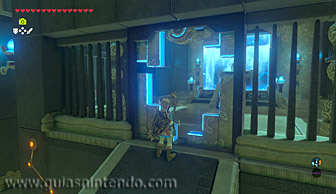
Para llegar al cofre sube la rampa que hay a la derecha desde la entrada del santuario y coge uno de los cuatro barriles de madera que vas a encontrar. Después sube con él en brazos en una plataforma móvil que llega hasta ahí y déjalo encima, y luego lanza una flecha a un cristal que hay a mano derecha cuando estés a punto de chocar con unos barrotes. De esa manera abrirás los barrotes, aunque cerrarás otros que hay más adelante, por lo que tendrás que volver a lanzar rápidamente otra flecha al cristal cuando superes los primeros barrotes para abrir los segundos. Así podrás llegar hasta el final del recorrido y poner el barril sobre otro interruptor, el cual te desbloqueará el acceso a un cofre que contiene un mandoble real.
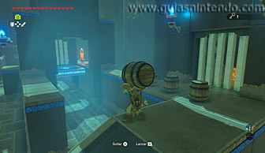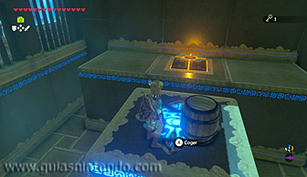